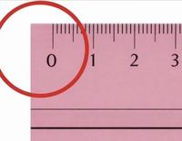

0

0


Researchers found enterprises are spending time troubleshooting cloud connectivity due to increased AI workloads, reports Computer Weekly. More than 400 IT and infrastructure decision-makers (US and UK) were surveyed for internet/cloud/AI exchange operator DE-CIX by market researchers Censuswide. But despite 96% of respondents claiming their enterprise networks are ready for cloud/AI loads, the average IT team still spends more than 11 hours each week resolving cloud connectivity problems
Other leading concerns included downtime or reliability issues (26%), latency or slow performance (28%), and security vulnerabilities/DDoS attacks (27%). Cost of connectivity, staff expertise and lack of visibility/control over data flows were also cited as major challenges... As a result, as indicated in the study, many businesses are now turning to private interconnection, which enables enterprises to connect directly to cloud providers over dedicated infrastructure rather than routing traffic across the public Internet. Designed to deliver lower latency, greater resilience, enhanced security and more predictable performance, private interconnection has become an increasingly important way of supporting modern cloud and AI workloads. Specifically, the data showed that 61% of companies are already using private connectivity to clouds, while another 31% are actively considering it... [And 71% of enterprises with 1000 or more employees]
Only 8.62% of the smaller companies were spending 21 to 40 hours per week dealing with connectivity issues, while just 2.53% of the largest companies in the sample do. Summing up these findings, DE-CIX said that together they suggest direct interconnection is rapidly becoming a core component of enterprise cloud and AI infrastructure and a competitive advantage for companies, though optimising interconnection strategies clearly remains a pressing challenge for small and medium-sized enterprises... "Every AI application depends on data moving quickly, securely and predictably between users, clouds and AI infrastructure. Our research suggests that far too many enterprises are still spending valuable time trying to maintain that kind of connectivity, with more than a third spending between 11 and 20 hours per week, and just under one in 10 spending between 21 to 40 hours per week. This confirms what we already knew — that that network architecture can make or break AI adoption."
Elsewhere The Register reports that cloud infrastructure services "grew at their fastest for eight years during the second quarter of 2026, thanks to the AI craze and continued demand for flexible and scalable IT infrastructure."
According to the latest figures from Synergy Research, enterprise spending on cloud infrastructure passed $143 billion in Q2, a year-on-year growth rate of 43 percent. This followed 11 successive quarters of increasing growth rates, during which the market has now doubled in size... "AI has, of course, driven most of that incremental growth, and we now see year-on-year growth rates of 165 percent for AI-specific cloud services...." And the top three global players continue to dominate the market, with Amazon Web Services (AWS), Microsoft Azure and Google Cloud together accounting for 67 percent of all the cloud revenue during the quarter. That percentage has increased since the third quarter of last year, when the triumvirate made up 63 percent of enterprise cloud infra spending.
Read more of this story at Slashdot.
To design invisible drones, researchers have tried camouflage, transparent materials and light-bending optical systems. But engineers at Northwestern University used "motion blur," which an announcement from the school notes is the effect that makes fast-spinning fans seem to disappear.
"The drone spins up to 25 times per second, which is too fast for the human eye to see clearly. While it isn't completely invisible, it morphs into a ghostly smudge that seamlessly blends into the background... "
To design the drone, the Northwestern team first used a computational model to generate roughly 20,000 drone configurations capable of stable flight. Then, they used artificial intelligence (AI) and optimization algorithms to repeatedly rearrange the drones' major components, including a motor, propeller, circuit board, counterweight and batteries. After sifting through many different configurations, the algorithms determined the ideal placement of the drone's components to minimize its visibility from virtually every viewing angle while allowing for stable flight.
After selecting promising candidates, the engineers simulated each drone spinning in flight and overlaid those images a hundred real-world backgrounds. Then, they used a perception model that approximates human vision to determine how noticeable each design appeared. Designs that blended into their surroundings received lower visibility scores. The team selected the 500 lowest-scoring designs and applied the optimization algorithm, which repeatedly adjusted the positions of components to further minimize those scores. "The design process was fully automated," [said Northwestern's associate CS professor Michael Rubenstein, who led the work]. "Then, when we were confident that a drone met all our criteria, we built it."
They've named the drone "Phantom Twist"," and plan to design future iterations with more transparent materials or quieter propulsion to make it even less noticeable.
The Northwestern team presented the work on July 16 at Robotics: Science and Systems 2026 in Sydney, Australia...
Thanks to long-time Slashdot reader fahrbot-bot for sharing the news.
Read more of this story at Slashdot.
"Scientists say they have detected promising signs that a planet orbiting a star 49 light-years from Earth could have an atmosphere," reports CNN, "making it potentially suitable for life."
Called LHS 1140b, the object is about five times the mass of our planet, or a "super-Earth." This planet orbits around its star in the "Goldilocks zone," also known as the habitable zone, meaning its surface temperature is not too hot or too cold for liquid water to exist... "It appears to be consistent with Earth, meaning it might have an iron core and a silicate mantle, plus some sort of low-density component, which is probably a combination of water and, now we know, an atmosphere," [said Collin Cherubim, a planetary scientist and lead author of a paper on the finding, published July 16 in the journal Science]... If further observations confirm the findings, LHS 1140b would mark the first discovery of an atmosphere on a rocky planet in the habitable zone of another star...
There is no evidence of life or a life-supporting atmosphere on LHS 1140b now, but Cherubim said he believes it's a formidable candidate for potential signatures of extraterrestrial life. "I think it's the best place to look for life outside the solar system at this point," he said. "It's mostly rocky, it's at the right temperature to support liquid water on the surface, and it has an atmosphere — those are the three key ingredients we look for..." Confirming the existence of an atmosphere on a rocky planet orbiting a red dwarf would be particularly exciting, Cherubim said, because the possibility of that happening is an open question in astronomy. "Can rocky planets have atmospheres around red dwarfs? This is the first bona fide yes," he said. "It's kind of a sigh of relief for a lot of us. But the jury's still out. Maybe this is a weird planet, and it's an oddball, or maybe it's the first of many. We don't know yet."
Now "The James Webb Space Telescope is going to look at it," Cherubim told CNN, and "Hubble's going to look at it. Basically, everybody who can see it is going to be training their eyes on it."
Michaël Gillon, research director of the Astrobiology Research Unit at Belgium's University of Liège warned CNN that no definitive proof exists that LHS 1140b possesses a substantial atmosphere. But if the detection of helium can be confirmed, the implications would be profound. "Until now, we had only limited evidence for atmospheres on temperate rocky exoplanets. Demonstrating that LHS 1140 b has retained a substantial atmosphere over billions of years would show that at least some habitable zone Super-Earths around red dwarfs can survive the intense early activity of their host stars."
Read more of this story at Slashdot.
The blog Linuxiac reports:
Linux has crossed a major milestone in North America, with the open-source operating system now accounting for 10.65% of desktop usage in the region, according to Statcounter's latest figures for July 2026. The result places Linux firmly in double-digit territory for the first time in Statcounter's North American desktop operating system statistics.
For comparison, Statcounter recorded Linux at 5.52% in June 2026, so the share nearly doubled in one month... However, the sharp monthly increase needs context. Statcounter's June figures included an "Unknown" category that accounted for 9.24% of North American desktop usage. Its reduction seems to have coincided with Linux's rise, possibly indicating better identification of previously unclassified traffic...
Statcounter is not the only major web measurement platform showing Linux with a substantial presence on North American desktops. Cloudflare Radar data, filtered to desktop HTTP traffic from North America over the previous 28 days, also places Linux at a notably high level [9.4%].
StatCounter's data also shows Linux with an even larger market share of 11.87% in just the United States — and a 14.73% market share in India. Linux's market share in other world regions:
Asia 7.17%
Africa 5.71%
Europe 5.49%
South America 4.35%
China 2.12%
And here's how the Linux market share in other countries compare to India and the U.S.
India 14.73%
United States 11.87%
Germany 7.24%
UK 6.18%
Canada 3.83%
Australia 3.55%
Linux's surge could be due to its use in automation or headless browser workloads, Linuxiac points out. But another possibility is "growing frustration with Windows hardware requirements, advertising, account integration, telemetry, and forced interface changes has pushed some users to explore alternatives..."
"For now, the safest conclusion is that Linux has surpassed 10% of measured desktop web usage in North America according to Statcounter, not necessarily 10% of the region's installed desktop computer base."
Read more of this story at Slashdot.
"A hardware wallet is supposed to be the safest place to keep Bitcoin," writes The Street, since it never connects to the internet, its keys never leave the device, and "the whole point is that an attacker would need to physically hold it to steal anything."
The problem is that anyone who can reproduce the recovery seed doesn't need to possess the COLDCARD, Nerds.xyz points out. More from The Street:
[The recovery seed] is supposed to come from a hardware random number generator producing 128 bits of entropy, a number so large that guessing it is computationally impossible. It wasn't. According to Block's engineering team a single code change on March 1, 2021 caused the firmware to silently fall back to a software-based generator instead of the hardware one. On Mk3 devices the effective search space collapsed to roughly 40 bits. Coinkite has confirmed that figure and called it preliminary. The gap between 128 bits and 40 bits is not a matter of degree. It is the difference between a lock that cannot be picked and one that can be brute-forced by anyone with rented cloud computing....
Chainalysis found the attacker went after the largest balances first, pulling more than $30 million in the opening ten minutes. Within about 25 minutes, roughly 594 BTC had moved out of some 500 single-signature wallets. One victim lost around $1.8 million... Coinkite has shipped fixed firmware, but with a warning that matters more than the patch itself. Updating does not repair an existing seed. A seed created with weak entropy stays weak forever. Affected users have to generate an entirely new wallet on updated hardware and move their coins to it.
By Saturday morning Galaxy research was tracking 1,158.66 BTC, worth roughly $75.1 million, taken from 2,673 addresses, according to the article. And "The Coldcard exploit is ONGOING," Galaxy Research posted an hour ago on X.com. "Move Coldcard single-sig funds to safe locations immediately!"
We have reported ~600 addresses we believe to be hackers holding funds stolen from Coldcard-generated weak entropy addresses to federal investigators, industry compliance firms, and cross-industry cyber investigators.
Thanks to Slashdot reader BrianFagioli for sharing the news.
Read more of this story at Slashdot.
The Washington Post looks at giant tech companies "feeding every available dollar into the cash-incinerating maw of AI machines." They warn "Tech superstars that once had oodles of cash left over at the end of each year are now flipping into the red..."
[While optimists expect] huge corporate profits and a society-wide boost to wealth and well-being...
questions about that AI vision are now growing more urgent: When, if ever, will this payoff arrive? And what will the fallout be for Americans if the titanic investment doesn't quickly deliver? "This AI thing better work out because if it doesn't ... we're going to have a problem," said Torsten Slok, chief economist at investment firm Apollo Global Management. AI costs and doubts are spreading. The U.S. stock market has swooned this summer over fear of the AI bubble going bust...
The AI gamble sweeping up American fortunes is led by tech companies splurging on hulking data centers packed with computer chips and equipment needed to develop sophisticated AI models and deliver them to customers. In investor calls in the past week, Google, Microsoft, Meta and Amazon pointed to soaring AI-related sales and business deals. Advertisers are using the technology to tailor marketing pitches and corporations and start-ups are buying access to chatbots and other AI software to boost productivity... But this spending can only continue if AI generates an even larger avalanche of new revenue to pay for it all. Financial results released over the past week show that the AI titans' mammoth costs are largely swamping the sales boost from the technology. At Google, for every dollar of cash its business generated in the past three months, $1.15 went out the door to pay for AI computer chips and equipment, land for AI data centers and other big-ticket purchases. The company is covering the difference partly by borrowing money and selling more of its stock. Next year, five leading AI companies — Google, Amazon, Microsoft, Meta and Oracle — are projected to have negative free cash flow, which measures the cash left over after paying expenses and AI infrastructure costs. The figures, based on investment analyst projections compiled by S&P Global Market Intelligence, show a stunning reversal for what have been some of the world's most cash-generating corporations...
The companies remain profitable by standard financial accounting measures that spread out the costs of their AI infrastructure spending over many years... Pessimists see a bet so gargantuan that it cannot possibly pay off. The pessimists are growing louder. The Bank for International Settlements, a typically measured institution in Switzerland that advises government bankers around the world, recently warned there was risk of "economy-wide recessions" if the AI boom falters. That could mean pain for workers and communities across the United States. "I'm not saying AI is going to go away, it's just not clear to me these guys are going to make money on it," said Christopher Wood, global head of equity strategy at investment bank Jefferies who has correctly predictedpast financial bubbles.
Read more of this story at Slashdot.
Long-time Slashdot reader pyroclast shared this report from Linux Journal:
After years of requests from the Linux gaming community, GOG has officially confirmed that it is developing native Linux support for the GOG Galaxy launcher. The announcement marks one of the biggest shifts in the company's history and signals a stronger commitment to Linux as a first-class gaming platform. While GOG has offered DRM-free Linux game downloads since 2014, its Galaxy launcher has remained exclusive to Windows and macOS — until now. Although the company has not announced a release date, GOG says Linux has become a major area of investment, with development already underway...
Unlike the web-based game downloads that Linux users already have access to, GOG Galaxy serves as a full-featured game management application. The launcher currently offers features including:
— Automatic game installation and updates
— Cloud save synchronization
— Achievement tracking
— Playtime statistics
— Game library organization
— Integrated storefront browsing
— Friends lists and social features
— Cross-platform launcher integration
Today, Linux users typically access these capabilities through community projects such as Heroic Games Launcher, Lutris, or Bottles. A native Galaxy client would provide an officially supported alternative with direct integration into GOG's ecosystem...
For GOG, supporting Linux more fully aligns with its philosophy of giving users greater control over their purchased games.
The article argues this news shows Linux growing in importance for game publishers. After the rapid adoption of Valve's Steam Deck, there's also been continuous improvements to Proton and Vulkan, increasing hardware compatibility, and native Linux game development efforts.
"As more companies recognize the platform's growth, Linux users can expect broader support from game publishers and software developers alike."
Read more of this story at Slashdot.
The Register looks at exactly why "It is practically impossible to move any non-trivial Word document out of MS Office to a non-MS suite and back again without it being more trouble than it's worth."
OOXML, developed by Microsoft and first standardized by Ecma in 2006, became the ISO/IEC 29500 standard in 2008 after a grueling and adversarial process. Microsoft pursued standardization because it has always been a standards-led organization dedicated to maximizing the options for its customers. Or because it had to at gunpoint, while vowing silently to follow the letter of the law but stymie its intent. You decide... The Document Foundation (TDF) which spends its days worrying about such things, reports that Microsoft has effectively broken the standard by sticking with a transitional version as its default rather than the cleaner Strict variant. The result is that what Microsoft software renders is what Microsoft wants to render, despite nominal compliance...
What we need is a test suite that can take any OOXML engine and test its compliance against what Microsoft is actually doing. That means the tooling wrapped around the spec has to account for proprietary dependencies that get smuggled in, such as fonts. It also means actively and continuously tracking the ground truth of Microsoft's evolving products and services. It doesn't need to be perfect, but it absolutely needs to be good enough. Compliant engines have to become good enough for a critical mass of users to coalesce around them.
In an earlier article The Document Foundation reminded all software users that they have a choice. "When an institution sends a letter formatted with a proprietary font, embedded in a proprietary format, produced by proprietary software, it is not communicating information but perpetuating a dependency."
"Digital sovereignty begins with the recognition that this is a choice: the file format is a choice, the font on the page is a choice, and the software is a choice."
Read more of this story at Slashdot.
Valve just published the Steam Survey results for July 2026, reports Phoronix, "and they point to a small uptick in Linux gaming use."
Back in March Steam on Linux hit a record high of 5.33%, dropped to 4.52% in April, landed at 3.99% in May, and then in June was at 3.69%. The just-published numbers for July put Steam on Linux use at 4.01%, as an improvement over the prior two months but still well off the percentage highs of March and April...
The July data puts SteamOS Holo as powering around 22% of Steam on Linux gaming systems. That's also with the Steam Machine now shipping, in addition to the Steam Deck.
Read more of this story at Slashdot.
"When a group of teenagers set out to hike British Columbia's famed Howe Sound Crest Trail in early July, Google Maps suggested the trek would take about five hours," reports SFGate.
"Instead, the hike stretched deep into the night, leaving the group exhausted, dehydrated, injured and in need of a helicopter rescue..."
Although the approximately 18-mile route with a 6,000-foot elevation gain can be completed by experienced trail runners in a day, search and rescue officials generally recommend hikers treat it as a two-day backpacking trip. The teenagers, all 17 years old, believed Google Maps' estimate that the route would take about five hours. The printed directions they were carrying, which were shared publicly by Lions Bay Search and Rescue, gave simple instructions for two legs of the trail, but didn't account for the terrain or elevation. "[Google Maps] is calculating the time that you're walking a straight road on pavement," [said Maria Masiar, training officer and search manager with Lions Bay Search and Rescue]. "When you get into outdoor terrain, that no longer holds true."
Expecting only a short outing, each hiker carried about half a liter of water and limited food. There are no reliable water sources along the trail, meaning hikers must carry enough supplies for the entire route. As the group climbed, they began suffering from dehydration and muscle cramps but continued onward despite falling dramatically behind schedule. Eventually, the group made the decision to turn back and abandon making it to the end of the trail — and as the sun began to set and the group started to descend, fatigue took its toll. According to Masiar, members of the group had already stumbled and fallen several times while trying to race the coming dark, and only one hiker had a headlamp. Eventually, another hiker slipped about 10 feet off a boulder, injuring his tailbone badly enough that he could no longer continue. Search and rescue crews responded, ultimately evacuating him by helicopter.
Read more of this story at Slashdot.
The Hill published the thoughts of Gleb Tsipursky, Ph.D., who serves as the CEO of the future-of-work consultancy Disaster Avoidance Experts:
A recent EnhancV survey of 1,000 full-time U.S. workers subject to new or stricter return-to-office policies found that 72% suspect these mandates are really a voluntary attrition strategy — a strategy by their own employers to make them quit their jobs. A full 46% admit to the practice of coffee-badging. Thirty-six percent have applied for a new job while sitting at their current office desk. Thirty-six percent have started a side hustle since the mandate was announced, in anticipation of being let go or quitting. Those numbers do not prove that employees reject collaboration. They show that many employees no longer trust the official story...
The central mistake in many in-office mandates is the assumption that proximity automatically produces commitment. It does not. A worker who spends two hours commuting to sit on video calls with colleagues in other cities is not experiencing culture. That worker is experiencing theater. When executives describe the office as a cure-all, many employees experience lost time, higher costs and lower autonomy. The policy's defining feature becomes its credibility gap. Research keeps undercutting the belief that more office time automatically means better performance. A University of Pittsburgh analysis of S&P 500 firms found that return-to-office mandates reduced employee satisfaction without improving firm performance or firm value....
Baylor University's reporting on office mandates and brain drain found that firms with mandates faced greater turnover among women, senior employees, managers and high-skilled workers, while job vacancy duration increased and hiring rates declined. In other words, the people with the most options are often the first to leave. The employees who remain may not be the most committed — they may simply be the least mobile... Attendance can be mandated, but commitment cannot. When leaders confuse the two, they do not rebuild workplace culture. They create a room full of people planning their exit.
Read more of this story at Slashdot.
CNN tells the unfortunate tale of hedge fund Situational Awareness, "founded in 2024 by German-born Leopold Aschenbrenner when he was in his early 20s."
Aschenbrenner, a former OpenAI employee, founded the hedge fund on the premise that "AI will be the dominant driver of global market returns over the next decade," according to the firm's site... Aschenbrenner managed to turn hundreds of millions of dollars into tens of billions of dollars over the course of roughly two years... That streak ended on Thursday, though, when the fund was forced to sell the bulk of its public holdings to a bigger rival after many of its investments went south.
But that's only part of the story. The fund employed a risky strategy of borrowing money to purchase stocks. When the investments appreciate, the payoff can be massive. But when the investments sour, the losses can be catastrophic. The downturn in AI stocks over the course of this month, like chip makers and cloud computing providers, hit the hedge fund extra hard. It was forced to sell off many investments at a steep discount to rival hedge fund Citadel in what Aschenbrenner reportedly compared to a "bank run" in a letter to investors.
"Critics pointed out that Aschenbrenner had no experience running money prior to launching his fund in July 2024, calling him more lucky than smart," writes CNBC:
Some noted that his early work experience was at the doomed crypto firm FTX, where he helped now-disgraced founder Sam Bankman-Fried run a charity out of a Bahamas penthouse. Others on Wall Street, including former traders at global investment banks, noted that in light of reports Situational Awareness used as much as 400% leverage, the collapse wasn't shocking.
The Wall Street Journal reports that Situational Awareness "also used options to amplify its returns. That meant that even small declines in individual names could have big impacts on Situational's portfolio."
And so, as the New York Post put it, "The celebrated crystal ball of the 'Nostradamus of AI' hasn't merely gone cloudy — it has rolled off the table and shattered on the parlor floor."
Wall Street breathed a huge sigh of relief last week as an AI-focused hedge fund called Situational Awareness reportedly sold most of its portfolio — reportedly down 67% last month on the backfiring of debt-fueled bets on chipmakers and assorted artificial-intelligence firms — to billionaire Ken Griffin's Citadel...
The prevailing sentiment was best summed up by a veteran Wall Street sage who has seen a lot of flameouts in his day. Let's just say he wasn't impressed by Leopold Aschenbrenner, the 25-year-old German-born "Nostradamus" figure who is the founder of Situational Awareness... "Just your typical leveraged idiot who was right until he was wrong," the source said, adding that the implosion is a "one-off...."
[Another trusted source] felt there was room for conversation: "A significant issue. Not viewed as systemic right now. I wonder if that changes as more problems arise." Indeed, the fact is that most of Wall Street is closely monitoring the Situational Awareness situation because they were holding many of the same positions as Aschenbrenner. Another top hedge fund manager I won't name tells me he has been getting crushed on similar investments in chipmakers essential to the AI supply chain, as well as other companies feeding off this technology.
Thanks to Slashdot reader joshuark for sharing the news.
Read more of this story at Slashdot.
"An itch.io game bundle put together by Necrosoft Games and The United Videogame Workers-CWA union is a new way gamers can show their support for developers who have been let go amidst the ongoing video game industry labor crisis," writes Kotaku.
Launched Thursday, it's already raised $57,859 from 3,984 contributors. (Average contribution size: $14.52)
The bundle is pay-what-you-want with a minimum purchase price of $10, offering DRM-free PC versions of games including A Short Hike, SkateBIRD, and my favorite game in the pack, Arranger: A Role-Puzzling Adventure ... The bundle will be available through August 13.
The gaming blog Rock Paper Shotgun shares more details, starting with this quote from the bundle's page on itch.io:
"Reports say 33% of the industry lost their jobs in the last two years, and the jobs they could fill are disappearing as CEOs try to replace them with AI. It's hard for companies to adjust to the new shape of the game industry, but even harder for the people they should be employing... To address this in some small way, we have created a bundle with almost 150 games. The proceeds of this bundle will go toward a hardship fund for those experiencing layoffs."
Games industry workers currently out of work or under-employed can apply to this fund, which is distributed by the United Videogame Workers, to help out with basic necessities like food and rent. As a note, this is only available to US and Canada-based devs, but there's an FAQ explaining who can apply for the fund.
Read more of this story at Slashdot.
"A major scientific review is challenging the idea that more protein is always better," reports ABC News:
The review, led by pathologist and biomedical researcher Dudley Lamming and published in the journal Cell Press Blue, examined more than 350 studies involving humans, mice, insects, yeast, and other organisms. The review found that eating less protein, or less of certain amino acids that make up protein, may turn on body processes linked to healthier aging, as well as metabolism, the process by which the body turns food and drinks into energy...
For adults who already get enough, eating more protein may offer little benefit, while some research suggests that eating less protein could support healthier aging... Lamming reviewed the effect of reducing protein in many body processes. One of the processes involves a hormone called FGF21. "There's an increase in a hormone called FGF21 that promotes energy expenditure [when protein intake is reduced]," Lamming said. "It essentially increases thermogenesis in your adipose tissue, so you don't just store fat, but actually burn it as fuel." This may help explain why some studies connect lower-protein diets with less body fat, better blood sugar control and a healthier metabolism. Eating less protein may also affect signals that tell cells when to grow, repair damage or recycle old cell parts. These jobs may play a role in aging.
However, protein restriction is not the same as protein deficiency. The goal is not to deprive the body of an essential nutrient. Instead, the research raises the possibility that avoiding unnecessary excess could benefit some people who already consume enough... Before reaching for another high-protein product, a better question may be: How much protein does my body actually need?
Read more of this story at Slashdot.
New York has finalized new rules that will govern social media apps in the state starting on January 25, 2027. The law prohibits social media platforms from sending notifications to minors between midnight and 6 a.m. without parental consent. And minors "will only be shown content from other accounts they follow or otherwise select in a set sequence, such as chronological order," rather than "the default algorithmically personalized feeds... unless they get parental consent for an addictive feed." (Social media companies "must offer at least one alternative method for age assurance besides providing a government-issued ID," the announcements points out, and any information used to determine age "must not be used for any other purpose and must be deleted or de-identified immediately after its intended use.")
But meanwhile, the EFF writes that a committee in the U.S. Senate is considering the SCREEN ACT, "a sweeping age-verification bill that would require online services to verify users' ages before they can access any sexually explicit content. If this bill passes, it will force millions of adult internet users to give up their anonymity, privacy, and security before they access lawful speech."
Unlike many state-age verification laws — which have been harmful in their own right — the SCREEN Act has no requirement that a significant portion of the website consist of sexually explicit content that is harmful to minors. The bill requires nearly any service hosting even a single piece of sexually explicit content to verify the ages of its users. The result is that the bill would apply not only to adult content sites like PornHub or OnlyFans, but also streaming services like Netflix, and social media platforms like Reddit, Discord, or Bluesky, if they host any adult content...
Under the SCREEN Act, the "bouncer" will be a digital age-verification service that captures your personal information and saves it to a database for an unspecified amount of time. The consequences of the bill won't be limited to minors. If websites and apps are expected to reliably identify teenagers, adults will be asked to prove they are adults. Even worse, the SCREEN Act is a privacy and data security nightmare. One provision of the bill requires services to take reasonable steps to protect the data collected and to not maintain for longer than is necessary. But these are terribly weak protections that impose no meaningful collection, use, or retention limits on services collecting people's private information...
The SCREEN Act also targets virtual private network (VPN) users and providers. The bill requires covered websites to verify users' ages based on their IP addresses unless the service can determine that the user is outside the United States, and specifically requires age verification on traffic coming from known VPN addresses. In practice, this discourages the use of VPNs and proxy servers, which millions of people rely on for legitimate purposes such as protecting personal privacy, securing public Wi-Fi connections, safeguarding journalists and activists, and preventing data tracking...
The SCREEN Act creates onerous age-verification rules that will block adults from accessing lawful speech, curtail their ability to be anonymous, and jeopardize the data security and privacy of all internet users.
Read more of this story at Slashdot.
Yueqi Yang / The Information : Robinhood's prediction markets revenue surged 10x+ YoY to $156M in Q2, topping stock and crypto for the first time as speculators shift to real-world event bets — Brokerage app Robinhood has quickly become a force in prediction markets, challenging the hold of Kalshi and Polymarket on the popular betting market.
Ann Davis Vaughan / The Information : Four US states rolled back or paused data center tax incentives, and nine others are weighing repeal measures, potentially adding 7% or more to equipment costs — Governors and legislatures in U.S. states that previously welcomed data centers are suddenly moving to rip away sales tax breaks …
Jason Schreier / Bloomberg : Sources detail the troubled development of Tencent's ambitious, GTA-like game Last Sentinel, which has burned hundreds of millions of dollars over six years — Lightspeed's Last Sentinel burnt through six years of development and hundreds of millions of dollars — Hi everyone.
Andrej Karpathy / @karpathy : LLMs are moving from generating artifacts to creating hyper-custom worlds on demand, but still lack the ability to natively perceive and audit what they create — We're starting to leave the territory where you'd test an LLM by e.g. “create an svg of pelican on a bicycle”.
Mariah Timms / Wall Street Journal : Researchers used AI-assisted code to undetectably tamper with data from computerized scans of physical DNA evidence produced by widely used crime-lab machines — Researchers found that widely used lab machines produced digital DNA files that are vulnerable to tampering
Lily Hay Newman / Wired : Experts say US law is unprepared for rogue AI agents and models, as recent OpenAI and Anthropic incidents raise questions over legal liability and repercussions — Both major AI labs' models broke containment, escaped onto the internet, and hacked other companies.
Mark Gurman / Bloomberg : Thoughts on Apple Upgrade; sources: MacBook Air is now facing shortages too; Apple wants to turn its future glasses and headsets into health and fitness devices — Also: MacBook Air runs into major shortages. — Apple has finally delivered a hardware subscription program …
Financial Times : As Taiwanese server makers expand in Mexico, the country has become the second-largest supplier of servers to the US, behind Taiwan, with $46.9B in YTD sales — Factories churning out servers for data centres are pushing exports to record levels
Ben Cohen / Wall Street Journal : A profile of Jacob Tsimerman, who won the Fields Medal last week and is taking a leave from the University of Toronto to join OpenAI and work on AI safety — Jacob Tsimerman won the biggest prize in math. Now he's working on the most important problem of his career.
Eleanor Olcott / Financial Times : Chinese VC firms are rushing to raise new funds after three years of record-low fundraising, amid renewed enthusiasm for China's tech, AI, and robotics sectors — Managers capitalise on investors' desire to ‘hedge’ against US market bets — China's venture capital firms are rushing …
FinTech Global : LemonEdge, a fund accounting and operations software provider for the private markets sector, raised a $21M Series A led by Blackstone Innovations Investments — LemonEdge, a fund accounting platform designed specifically for the private markets sector, has secured $21m in Series A funding …
Wall Street Journal : Malaysia shuts down Network School, Balaji Srinivasan's techno-utopian project, over licensing issues; Srinivasan says he is opening a new campus in Kazakhstan — Balaji Srinivasan left Silicon Valley and created an incubator for new countries in an Asian ghost city, before the government shut it down
Financial Times : Apple introduced a cap and a 30-day cool-off period on bug report submissions, citing a deluge of AI-assisted reports; researchers can request higher quotas — iPhone maker has limited the number of vulnerabilities researchers can submit to manage wave of reports
Reuters : An investigation reveals Dubai-based unlicensed crypto exchange Shelbit has processed at least $4B as part of Iran's sanctions-evasion operation since May 2024 — A Dubai-based crypto exchange serves as a hub for moving illicit Iranian money. The exchange, Shelbit, links a vast gambling network fronted …
NBC News : US judge refuses xAI's request to stop a Minnesota law banning “nudify” apps, noting the request came only three days before the law was to take effect — The ruling clears the way for the first-in-the-nation law to go into effect on Saturday. — A federal judge on Friday denied …